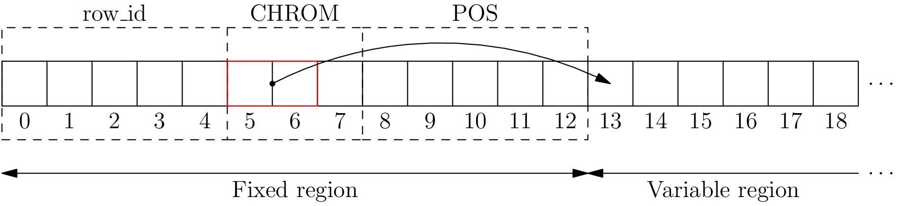

| Release: | 0.1 |
|---|---|
| Date: | June 16, 2013 |
This page describes the low level details of the binary format used to store each row in Wormtable. These details are not important to the average programmer who wishes to store data in a table. It may be useful to have a basic understanding of the low-level format when tuning for performance, and to understand the tradeoffs associated with fixed and variable size columns. It should also be possible to build a custom interface to Wormtable in another language that supports Berkeley DB using this data format definition.
Rows are hold data from a fixed number of predefined columns, which are together referred to as a schema. A table must have at least two columns, and the first column must be an unsigned integer column called row_id. This first column contains the key used by Berkeley DB to store and retrieve rows. The values stored in this column correspond to the zero-based row index, and they are automatically set by wormtable when a new row is appended to a table.
The schema is defined using an XML format, which describes the names, types, sizes and relative positions of the columns in a table. Suppose we had the following wormtable schema, describing the first three columns of a VCF file.
<?xml version="1.0" ?>
<schema version="0.1">
<columns>
<column name="row_id" element_size="5" element_type="uint" num_elements="1" description=""/>
<column name="CHROM" element_size="1" element_type="char" num_elements="var(1)" description=""/>
<column name="POS" element_size="5" element_type="uint" num_elements="1" description=""/>
</columns>
</schema>
In this schema, we have the mandatory row_id unsigned integer column, a CHROM column which holds variable length character data, and a POS column, which also stores five byte unsigned integers. When they are stored on disc, rows from this schema look something like this:
Rows are divided into two regions: the fixed region and the variable region. The fixed region occupies the first part of the row, and each column occupies a fixed number of bytes within the fixed region. For columns with a fixed number of elements, the number of bytes they occupy in the fixed region is num_elements * element_size; this is where the data for this column is stored. Columns with a variable number of elements do not store their data within the fixed region; instead, they store the address and number of elements that are stored in this particular row. Addresses then point to the variable region, which is filled sequentially as values are assigned to columns within the row.
In the example above, row_id and POS are both unsigned integers with an element_size of 5 and num_elements equal to 1, and so they both occupy exactly 5 bytes within the fixed region (and never use the variable region). The CHROM column on the other hand has an element_size of 1 byte (as each element is a single character), and has num_elements equal to var(1). This means that it is a variable length column in which one byte is reserved to store the number of elements stored in the variable region, starting at the address stored in the fixed region.
Therefore, variable length columns are assigned three bytes in the fixed region; the first two hold the address where the elements for this column start, and the third byte holds the number of elements stored. This format defines the fundamental limits of wormtable’s row format: since we have two bytes to describe addresses, rows are a maximum of 64K long. Similarly, since we have one byte to hold the number of elements in a variable length column, we store a maximum of 255 elements within a variable length column.
Values are stored in columns in a portable binary format. This binary format is very close to the native representation and can be converted into native types with very little overhead. The packed representation differs between the element types, but there are two overriding requirements that apply to all columns:
The second requirement is particularly important, as this ensures that indexes can be constructed by Berkeley DB without requiring a custom ordering function.